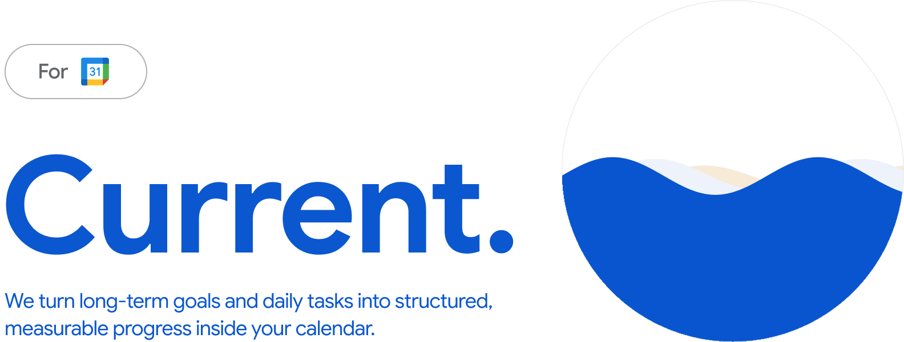
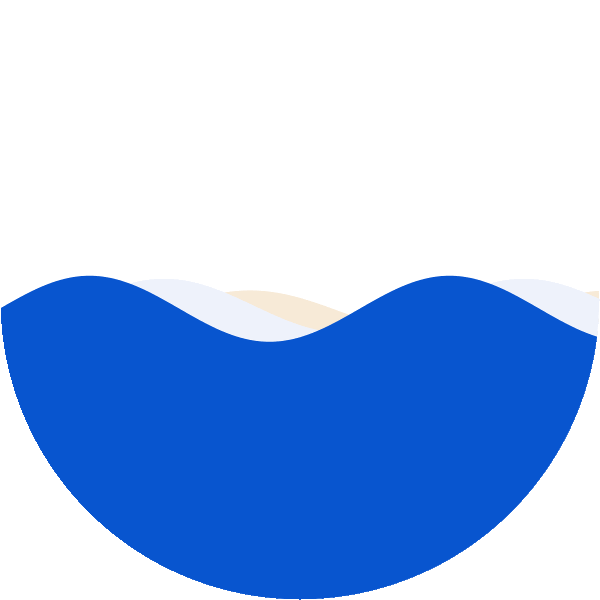
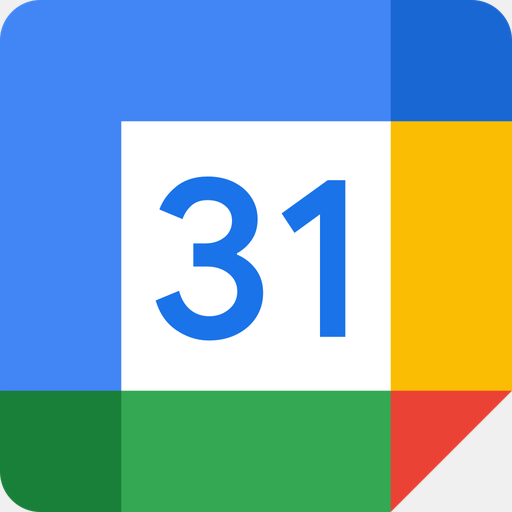
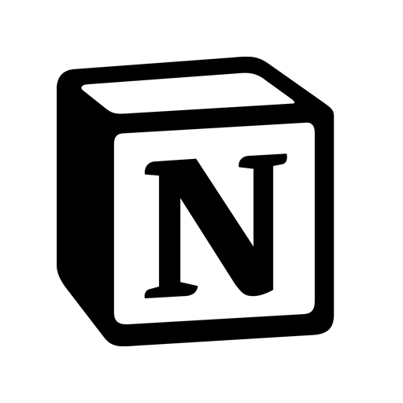
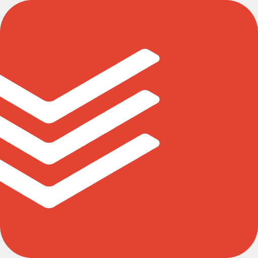
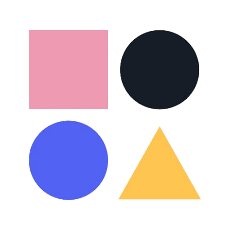
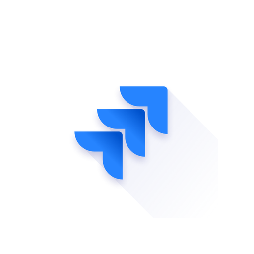
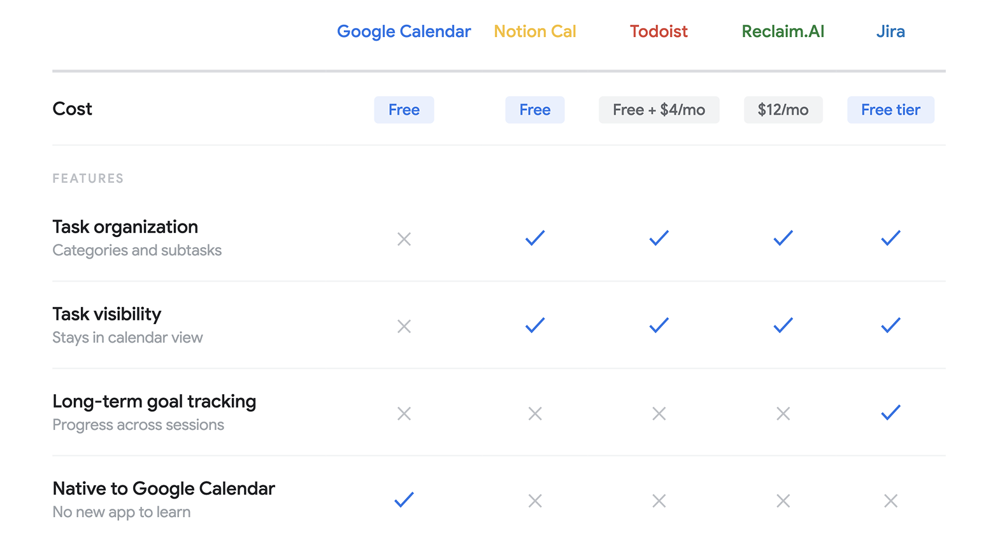
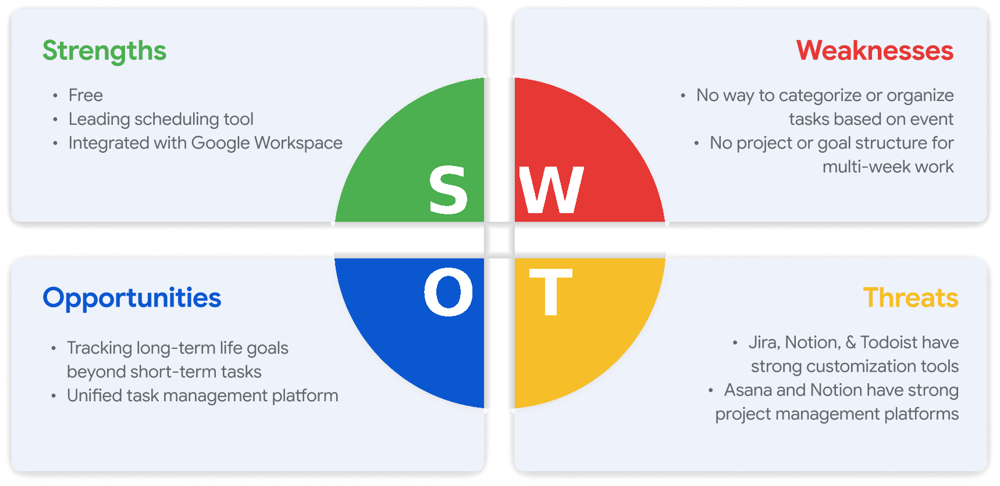

The Problem
A calendar isn't just a place to put your meetings. It's how you protect what matters most to you.
2.1 billion people rely on digital calendars to plan their lives, and Google Calendar is the most used of them, with 500M+ active users. But for all that reach, it was never built to hold the things people are working toward: a job search, a marathon, a new language.
Two pain points explain why:
Tasks live outside the calendar.
Long-term goals have no home.
That leads us to the question…
The Solution
1. Long-term Goal Planning
Set how often, how long, and which days, and your goal turns into real sessions on your calendar. Check them off as you go, and progress carries across sessions through a progress bar and subtasks.
Recurring Session Generation
Set the frequency, length, and customizations once, and the system generates your individual calendar sessions.
Progress Tracking
A progress bar tracks your momentum across sessions, with subtasks to break goals into concrete steps.
2. Native Task-Tracking & Organization
A drag-and-drop Kanban board (Planned / In Progress / Done) with a matching sidebar list. Both show the same task data, and you can update from either one.
Kanban ↔ Sidebar Sync
Moving a task on the board updates its status in the sidebar, and changes in the sidebar reflect back on the board. Both stay in sync regardless of which one you use.
Categories, Priority & Filters
Priority stars, categories, and filters let you sort and narrow down the task list.
Both live entirely inside Google Calendar's existing visual language: same popups, same sidebar accordion pattern, same Create flow, so the learning curve is zero.
Research
Surveys & Interviews
We surveyed and talked to people who already live inside their calendars, students and early-career professionals, to find out where the system breaks down. Through 47 surveys and 12 user interviews, here’s what we found:
use Google Calendar as their primary tool, but reach for separate apps just to manage tasks
still rely on sticky notes or whiteboards for spontaneous to-dos
rarely schedule long-term goals at all
From our interviews, here’s what our users said:
Personas
Our target users, students and early-career professionals juggling school, work, and personal growth, surfaced two recurring patterns in how they plan and where the system breaks down.


Process
Market Landscape






Comparing Google Calendar against the field surfaced a clear pattern: strong scheduling, weak task structure. I broke this down further with a SWOT to confirm where the real opportunity was.

Here, we see the market gap: Google Calendar's strength is reach and integration, but its weakness is structural: no categorization, no project or goal scaffolding for multi-week work. Tools like Jira, Notion, and Todoist solve organization, but none of them live where the time actually gets booked.
Takeaways
The hardest constraint was also the best one: build entirely inside an interface 500 million people already trust, using only the patterns that already exist there. That discipline is what made the feature feel native instead of bolted on: every popup, every sidebar accordion, every recurring-event mechanic was already familiar, which meant the only new thing a user had to learn was a habit, not an interface.
A current doesn't just push you, it carries you. It's natural, it's powerful, and it's invisible, until you look back and see how far you've moved.
What's Next
We're currently in the process of submitting Current to Google's Chrome Web Store review for publishing. From there: usability testing on the goal-creation flow with real installs, carrying out the GTM and marketing plan to drive adoption, tracking KPIs against our OKRs to validate real usage, custom and completion-based sorting for tasks, and exploring how the same model could extend beyond Chrome to other calendar platforms.